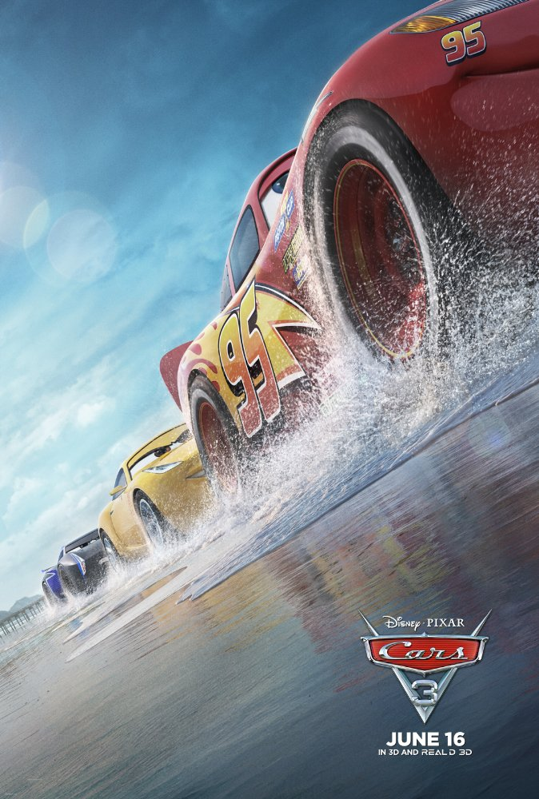

Cartoons.
Despicable Me.
Release Date: 8 July 2010 (Russia).
Genres: Animation | Adventure | Comedy | Family
Storyline:In a happy suburban neighborhood surrounded by white picket fences with flowering rose bushes, sits a black house with a dead lawn. Unbeknownst to the neighbors, hidden beneath this home is a vast secret hideout. Surrounded by a small army of minions, we discover Gru, planning the biggest heist in the history of the world. He is going to steal the moon. (Yes, the moon!) Gru delights in all things wicked. Armed with his arsenal of shrink rays, freeze rays, and battle-ready vehicles for land and air, he vanquishes all who stand in his way. Until the day he encounters the immense will of three little orphaned girls who look at him and see something that no one else has ever seen: a potential Dad. The world's greatest villain has just met his greatest challenge: three little girls named Margo, Edith and Agnes.
Hotel Transylvania.
Release Date: 18 October 2012 (Russia).
Genres: Animation | Comedy | Family | Fantasy | Horror
Storyline:In 1895, Dracula builds a resort in Transylvania, hidden from the humans, to raise his beloved daughter Mavis in a safe environment. In the present, the place is the Hotel Transylvania, where monsters bring their families to vacation far from the frightening humans. Dracula invites his friends - Frankenstein and his wife Eunice; Wayne and Wanda, the werewolves; Griffin, the invisible man; Murray, the mummy; Bigfoot, among others - to celebrate the 118th birthday of Mavis. When the party is ready to start, the 21-year-old Jonathan is walking through the forest and stumbles upon the hotel. Dracula sees Jonathan and disguises him as a monster to hide Jonathan from the guests. But Mavis also sees Jonathan and Dracula forces him to pose as a monster. Soon Mavis believes that Jonathan is the "zing" of her life despite the advice of her father about humans.
Cars 3.

Release Date: 15 June 2017 (Russia).
Genres: Animation | Adventure | Comedy | Family | Sport
Storyline:Blindsided by a new generation of blazing-fast racers, the legendary Lightning McQueen is suddenly pushed out of the sport he loves. To get back in the game, he will need the help of an eager young race technician with her own plan to win, inspiration from the late Fabulous Hudson Hornet, and a few unexpected turns. Proving that #95 isn't through yet will test the heart of a champion on Piston Cup Racing's biggest stage!
Masha i Medved.
Release Date: 7 January 2009 (Russia).
Genres: Animation | Action | Adventure | Comedy | Family
Storyline:Masha and the Bear are heroes of Russian folklore, known to all Russian children. Just that in the series they are different and live in the modern world, which gave the creators from Animaccord Animation Studio the ability to bring new possibilities to their interactions. Series tell us about a unique relationship between two main characters. Masha is an exceedingly active little girl who can't sit still on one place and has to make everything a business of her own. The Bear is a big and hearty guy who loves comfort and quietness. After their first met the Bear is always in anticipation for another fun and wild adventure that Masha will surely pull him in. Every 7-minute high-quality 3D CGI animated episode includes original music and songs and the series is largely played out through action with little dialog making it easy for children around the world to understand.
The Boss Baby.

Release Date: 23 March 2017 (Russia).
Genres: Animation | Comedy | Family | Fantasy
Storyline:Seven-year-old Tim Templeton has always been a boy of an overactive imagination, and for the past seven years, life was all peaches for him, getting all the love and affection from his caring parents. However, life will never be the same and Tim won't be the centre of attention anymore as the arrival of an improbable new brother named Boss Baby, dressed in a black suit complete with a tie and a briefcase, will shortly rob him of all love, as he takes over the whole Templetons' house. Nevertheless, although this may be true, soon, Tim and the new Boss in a diaper will need to put differences aside and join forces, as a sneaky scheme involving the head of Puppy Co. threatens to tilt the balance of power towards their insidiously adorable furry antagonists, not to mention that the next Pet Convention is in only two days.. Brothers, hurry up.